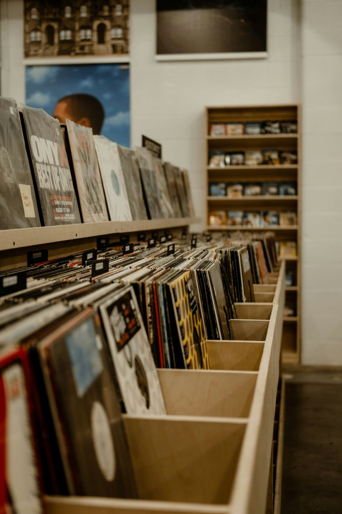
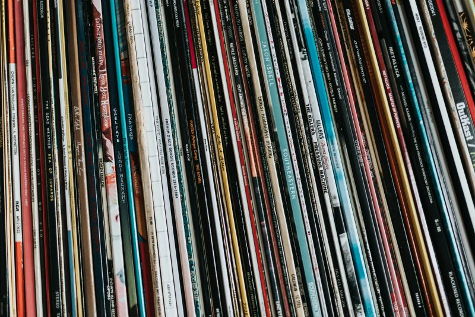
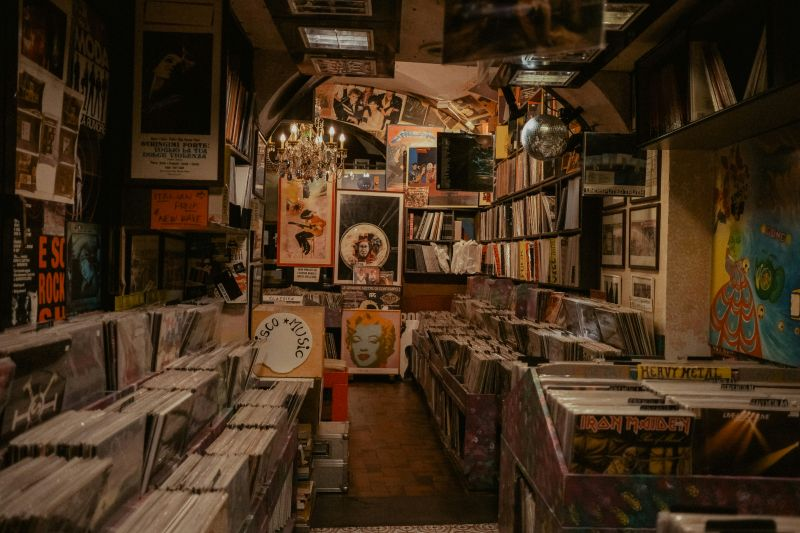
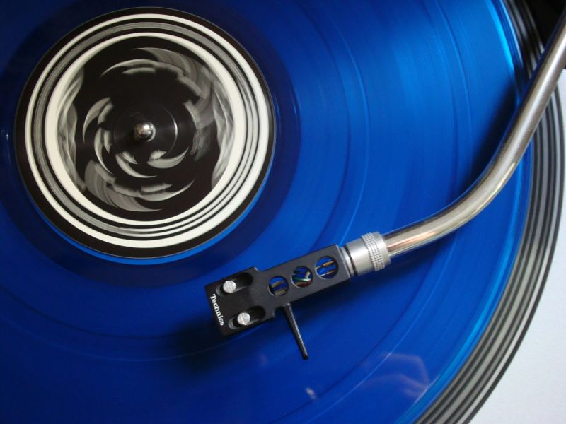
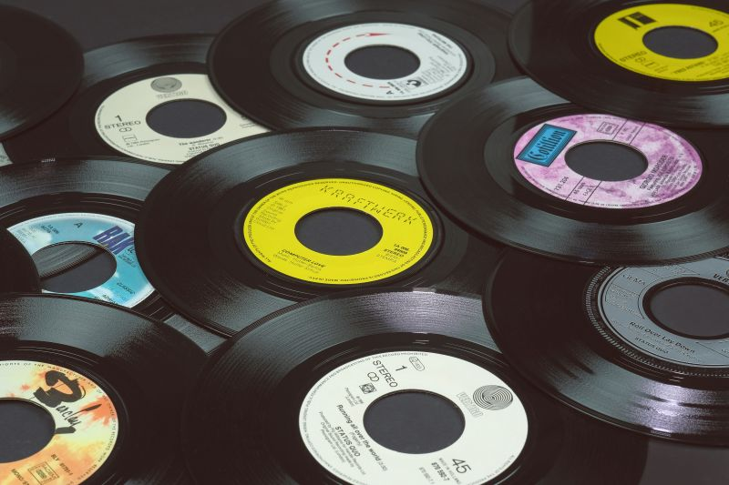
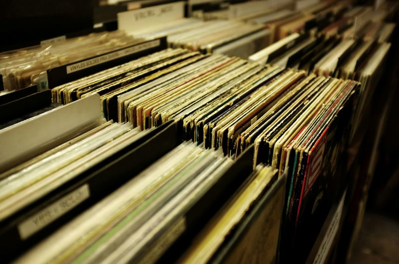
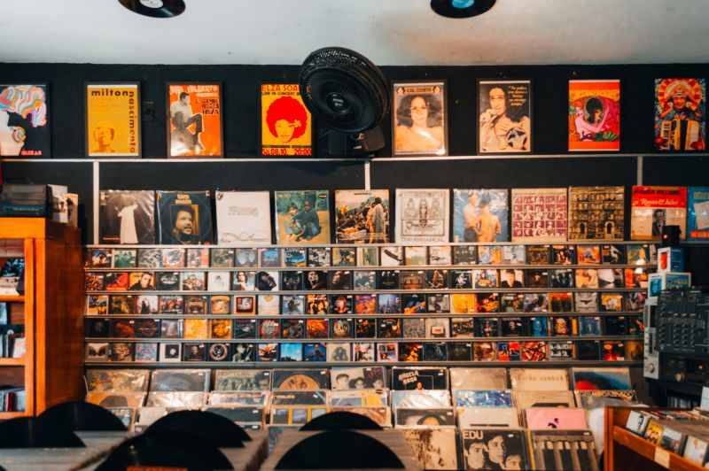
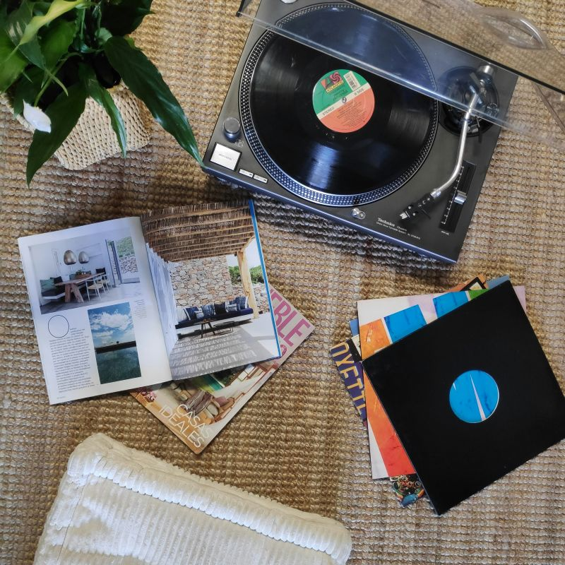

Inside the Shop
A look at the crates, the wall, and records we cant stop playing. Everything here is sorted by feel, not alphabet — dig around.








New & used vinyl · Listening station · Open seven days
A look at the crates, the wall, and records we cant stop playing. Everything here is sorted by feel, not alphabet — dig around.







